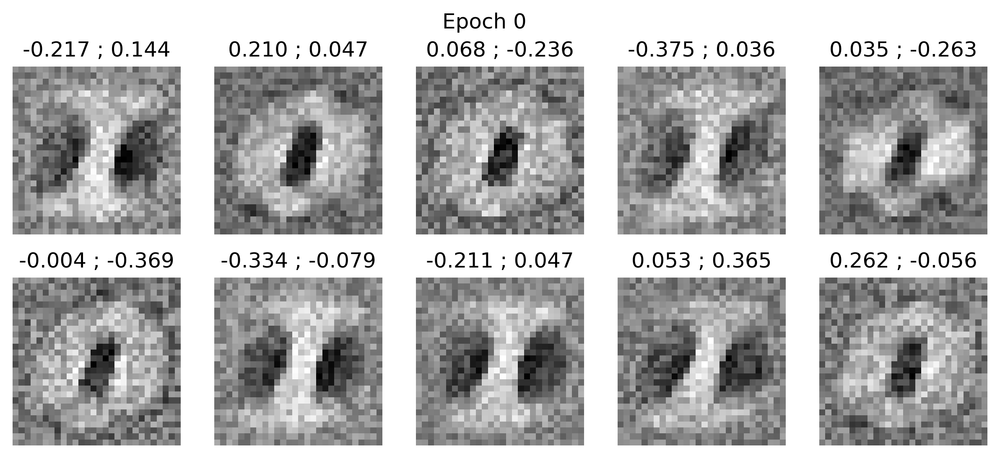

<script>
let index = 0;  // Start from 0

function updateImage(newIndex) {
    let testImg = new Image();
    testImg.src = `seed2/filters_${newIndex}.png`;

    testImg.onload = function() {
        console.log(`Successfully loaded filters_${newIndex}.png`);
        index = newIndex;  // Update index only if the image exists
        document.getElementById("gallery").src = testImg.src;
    };

    testImg.onerror = function() {
        console.log(`Image filters_${newIndex}.png not found, staying on filters_${index}.png`);
    };
}

// Listen for left/right arrow keys
document.addEventListener("keydown", function(event) {
    if (event.key === "ArrowRight") {
        updateImage(index + 1);
    } else if (event.key === "ArrowLeft" && index > 0) {
        updateImage(index - 1);
    }
});
</script>
